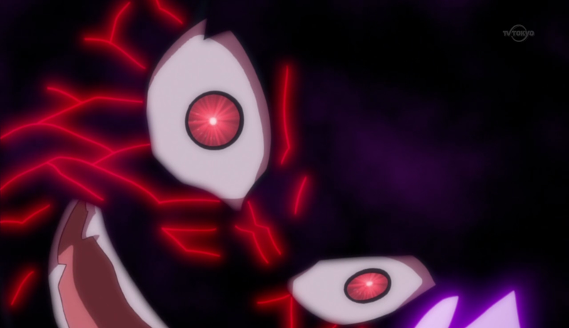
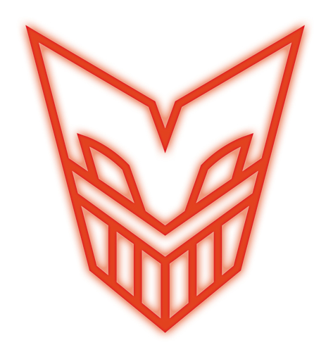
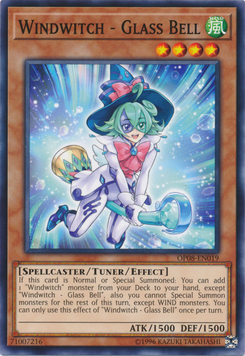
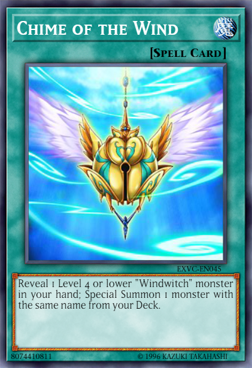
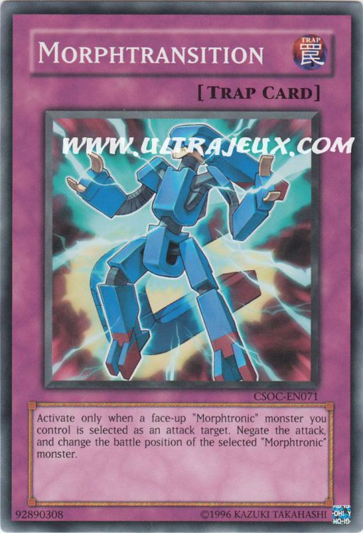
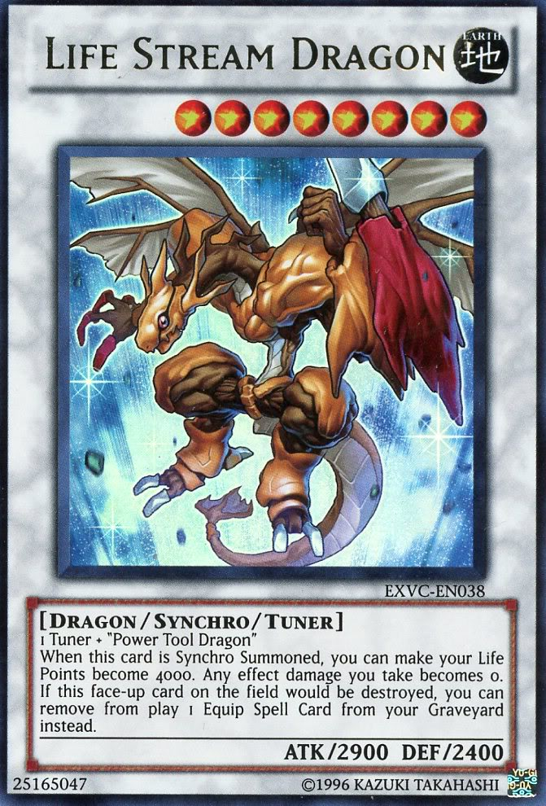

!
Sergey
's going to kill him!
!
Sergey
's going to kill him!
Rin
 cried out.
cried out.
Rin: No!
Yusei
!
Sergey
's going to kill him!
Rin cried out.
Yugo: Actually, from the way that bastard talked, I think he plans for both of them to go down! But hell if I let that happen! HANG ON RIN!
Yugo warned as he sped to catch up with Yusei and Sergey.
warned as he sped to catch up with Yusei and Sergey.
Rin: YYugo! What're you doing?!
Rin yelled, holding on to him for dear life. Yugo didn't answer, trying to focus all his attention on saving their new friend.
As hard as he tried, Yusei couldn't break free. He cursed for letting this happen. Sergey continued his insane laughter as they neared the edge.
Sergey: YES! NOW THIS SHALL BE BEAUTIFUL!
Just as they were both about to go over, Yugo rammed his D-Wheel into Sergey's to force him away from Yusei. This collision actually caused all three vehicles to fly off the bridge at the same time!
During the free fall, Sergey did separate from them, still laughing as he fell. Yusei, seeing Yugo and Rin now falling beside him, reached out to them with his right hand. Yugo then reached out with his right. The moment Yusei grabbed Yugo, a few things happened all at once.
First a red mark shaped like a Dragon's head started glowing on Yusei's right arm. Then Yugo's eyes glowed green
started glowing on Yusei's right arm. Then Yugo's eyes glowed green and began to scream in pain. LRin's bracelet began to glow bright green as well as she continued to hold on to Yugo. And lastly, all three were consumed by a massive
crimson colored dragon
and began to scream in pain. LRin's bracelet began to glow bright green as well as she continued to hold on to Yugo. And lastly, all three were consumed by a massive
crimson colored dragon vthat came out of the sky... And then they were gone. All
was quiet once again in the City. Inside the giant creature, on the other hand, things couldn't have been more intense.
vthat came out of the sky... And then they were gone. All
was quiet once again in the City. Inside the giant creature, on the other hand, things couldn't have been more intense.

Within the beast, Yusei and the two teens appeared to be in a black space with flashing stars passing by. They didn't have time to gaze, for one of them was in great pain. Yugo was still screaming terribly, like he was having the life ripped out of him. He held a hand over his heart as he screamed, while the other was being held firmly by Yusei. Yugo's eyes continued to glow green as this was happening. He was also struggling to break free, but Yusei held him tight.
As she held on to her friend, Rin noticed that the bracelet she was wearing was also giving off a green glow, but in a brighter tone than Yugo's eyes. She also saw the red mark on Yusei's arm. Both of those, however, paled in comparison to her concern with Yugo's condition.
Rin: Yugo?! Can you hear me?! Yugo?!
Her friend did not seem to hear her as his screaming persisted. Rin then turned to Yusei.
Rin: Yusei?! Where are we?! What the hell's wrong with Yugo?!
Although surprised and confused at first, Yusei quickly understood their situation. Seeing both his mark and Rin's bracelet glow after the two of them coming into contact with Yugo somehow told him what needed to be done.
Yusei: Rin, listen to me! No matter what, don't release Yugo! We both have to keep hold of him until it's over!
Rin: Until what is over?! What are you talking about?!
Rin yelled, starting to sound angry. Yusei remained calm as he tried to reassure her.
Yusei: You must trust me! I promise, Yugo will be alright! Just don't let go!
He instructed. Although scared as hell and extremely confused, Rin did as he said and kept a firm hold on her friend. At this point, Yugo was now covered by the green light of Rin's bracelet. Before long, Rin and Yusei heard a roar from above and looked up. It was the Crimson Dragon itself, and it was coming straight for them. Yusei saw that Rin was about to cover Yugo, scared for her friend's life.
Yusei: Rin! Don't move! Let it come to Yugo!
Rin looked at him like he had lost his marbles.
Rin: Are you insane?! That thing is going to kill him!
She argued.
Yusei: It won't harm him! Trust me!
He told her again. As much as she didn't like it, she backed off as he instructed. As she did, the Crimson Dragon had reached them and grabbed Yugo with it's front
claws. His screaming intensified as the creature began to pull something out of Yugo. Rin's eyes widened with fear and gasped as she saw a dark form being forcibly
removed from Yugo's body. Soon that darkness took on the appearance of a
dragon with the same dark glowing eyes as Yugo.
with the same dark glowing eyes as Yugo.
Rin: What in the world?!
She said, horrorstruck by the sight before her.
Yusei: That dark dragon... it must be
Zarc
's soul fragment inside Yugo!'
Yusei guessed.
He and Rin watched the Crimson Dragon firmly grip the dark dragon with all four of it's claws before biting it hard in the neck. Both the dark beast and Yugo screamed excruciatingly from the attack. As the Crimson Dragon continued to bite down, the dark dragon's body started to crack up. A dark red glow shone through the cracks that appeared from the beast's head to it's ferocious tail. All the while, it still struggled to get loose, but it was no good. The Crimson Dragon had no intention of releasing the malevolent creature.
Before long, the dark dragon gave off one final defiant roar as it disintegrated in an explosion of dark red light. As this happened, Yugo stopped screaming and his eyes became normal again before he fell unconscious on Rin's lap.
Rin: Yugo!
Rin yelled as she held him tight. Yusei was glad and pleasantly surprised that this had occurred. With it's task done, the Crimson Dragon roared in triumph and touched the tip of it's tail to Rin's bracelet before she could do anything. It glowed even brighter, completely obscuring everything in the area, including Yusei, Rin, and Yugo...
The next thing Yusei saw, he, the teens, and both their D-Wheels were in a town square plaza in the night. He recognized the place instantly.
He couldn't believe it; they had arrived in his world!
Yusei: I'm home! We've made it! But how? I thought we needed
Astral's airship to travel between worlds? How did we...?
to travel between worlds? How did we...?
He looked down at the mark on his right arm, which had finally stopped glowing. He then remembered the Crimson Dragon touching Rin's bracelet before arriving here.
Yusei: Could it be?
He asked himself softly as he heard Rin speaking again.
Rin: Yusei? What happened? Where are we? And is Yugo okay?
The girl asked frantically. Yusei then went over and checked their friend. He was pleased that he still had a heartbeat and a pulse.
Yusei: Yugo is fine. He just needs to sleep now.
Rin smiled as she looked down at Yugo. But she still had questions, and she didn't take long to demand them.
Rin: I'm glad Yugo is alright, but I'm still confused as hell! Where are we?! How did we get here?! Why did my bracelet glow?! What's the deal with that mark on your arm?! What were those dragons we both saw?! Finally, what the freaking hell did they do to Yugo?!
Rin asked rapidly in anger and worry. She stopped to catch her breath. Yusei understood her frustration and need for answers.
Yusei: We are actually in my home. That apartment building is where I live.
Yusei said, pointing to a small building not far from where they were.

Yusei: Once we're inside, I'll tell you what just happened.
Yusei promised. Rin nodded as she and Yusei began to pick up Yugo.
Yusei and Rin turned to see a young man with spiked up orange hair wearing wearing a sleeveless vest and other biker clothes. He was running up to them, looking concerned.
Yusei:
Crow !
!
Yusei said, glad to see his old friend.
Rin: You know him?
Rin asked, weary.
Yusei: Its okay. Crow Hogan is one of my oldest friends. We grew up together.
Yusei explained as Crow reached them.
Crow: Hey, about time you got back, buddy! I was wondering if you somehow preferred "that" world over ours!
Yusei grinned.
Yusei: Never.
He said as the two of them laughed.
Rin had no idea what Crow meant when he said "that world". Crow then finally noticed the two new arrivals.
Crow: Let me guess, Yugo and Rin?
Crow asked. The girl nodded.
Rin: I'm Rin, and this is Yugo. He's not hurt or anything. Just out cold.
Rin said, explaining why Yugo wasn't awake.
Rin: It's kind of a long story.
Crow nodded.
Crow: Glad to know you're both okay. Yusei told me about you two before he left. Name's Crow. I guess I'm the first to say "Welcome to our world!"
He said with a chuckle. Rin couldn't help but join in, even though she had no idea what he was talking about. Still, he seemed like a good person, plus Yusei did say they were friends.
Crow: Can I give you guys a hand?
Rin: Yes, please.
Rin said appreciatively. Crow picked up Yugo and carried him inside the apartment, while Yusei and Rin brought their respective D-Wheels into the garage. Crow took Yugo to a vacant room and laid him on the bed. Rin liked the look of the place as she gazed around.

Crow: Yugo is sleeping in our third roommate's bedroom. I'm sure he wouldn't mind.
Crow said as he came back. Rin thanked him. As she and Yusei parked their D-Wheels, she noticed another D-Wheel near where Yusei parked his.
Rin: Is that your D-Wheel, Crow?
Crow smirked.

Crow: Sure is! The Blackbird is my pride and joy!
The older teen said as he looked over at the black colored vehicle that seemed to have folded wings.
Rin: Blackbird? You named it?
Rin asked. She was surprised to see Crow suddenly look somber.
Crow: Actually, I didn't. It originally belonged to an old friend of mine named,
Robert Pearson
. He died a while ago in a big fire. I tried to save him, but...
He stopped talking as he lowered his head and closed his eyes. Rin covered her mouth.
Rin: I'm sorry. I didn't know.
Rin apologized. Crow then shook his head.
Crow: Ah, don't worry about it. It's ancient history. He left it to me... among a few other things.
Crow said vaguely.
Crow: Anyways, Yusei...
Crow said, getting Yusei's attention.
Crow: Didn't you say that a giant ship was supposed to drop you guys off here? Cause I didn't see a ship, just the Akakiryū soaring out of the sky.
Rin: Ship? Akakiryū?
Rin asked, not knowing what Crow was talking about. She then recalled one of the dragons that she saw on their way to Yusei's home. The one that was crimson colored and destroyed the dark one that came out of Yugo...
Yusei: There was an unexpected change in plans.
Yusei said. Before he could explain more, the front door to their apartment had burst open.
Three more people came in to join the group. One was a tall young woman about the same age as Yusei with dark burgundy hair in a almost gothic outfit. The other two were twin children with green hair. The first one, a boy, had his hair in a small ponytail. The other twin was a girl with her hair in two pigtails. All three seemed glad that Yusei had retuned.
Rin: More friends?
Crow: Oh yeah.
Yusei was then hugged by the small twins first, and then by the older woman.
Yusei:
Aki ,
Rua
,
Rua ,
Ruka
.
I missed all of you.
,
Ruka
.
I missed all of you.
Yusei said, both happy and surprised to see his other friends.
Rua: We knew you came back! We all felt it! Through our birthmarks!
Rua, the twin boy, said excitedly as he pointed at a
a mark the shape of a heart on his arm. The two girls then showed their own marks, each resembling a dragon claw.
The older girl's mark
on his arm. The two girls then showed their own marks, each resembling a dragon claw.
The older girl's mark was much bigger than
the one younger girl had.
Rin wondered what all those marks meant and how they let them know Yusei had returned.
was much bigger than
the one younger girl had.
Rin wondered what all those marks meant and how they let them know Yusei had returned.
Ruka: We came here as soon as we realized it!
Said Ruka, the twin girl, with a big smile.
Aki: We missed you too, Yusei. We all did...
The older woman, Aki, said softly. Rin noticed a certain twinkle in her eye the moment she saw him and smiled a bit. She then noticed her at last.
Aki: Who's that?
The twins saw Rin as well, with the boy blushing and seeing hearts upon seeing her.
Yusei: This is Rin, the girl I told all of you about. Rin, meet:
Izayoi Aki
,
Rua
and his sister
Ruka
.
Yusei introduced.
Rin: Hi.
Rin said politely as she bowed.
Rin: Nice to meet you all.
Ruka: Hi Rin.
Rua: H-Hi.
Rua stammered a bit and appeared awkward. Rin thought he was a little shy, but didn't seem to mind.
Aki: Welcome Rin.
Aki said. She then looked around but didn't see anyone else other than Crow.
Aki: Wait, wasn't there a boy that was supposed to be with her?
She asked Yusei.
Yusei: Yugo? He's here too, but he's sleeping in Jack's room right now. He's been through a lot tonight and we should let him rest.
Ruka: What do you mean? What happened to him?
Ruka asked, sounding concerned.
Rin: I still like to know that myself.
Rin said, now sounding impatient as she placed her hands on her hips. Yusei then turned to her.
Yusei: Rin, remember me telling Yugo that he and
Yuri shared a deep connection?
shared a deep connection?
He asked, with Rin nodding in response.
Yusei: Well, that connection has to do with a powerful evil that slept within both of them.
Rin: Evil?! What evil?! You mean that black dragon thing that came out from inside Yugo?!
Rin said, sounding scared for her childhood friend.
Yusei: I'll explain it in more detail later, but yes. It was harming him, but the other creature you saw, the
Akakiryu
, extracted that dark dragon from Yugo's soul and disintegrated it. Yugo's life is no longer in danger from it.
Yusei explained, further assuring her that Yugo would be fine.
Rin: How did it do that? And how was my bracelet involved?
Rin asked as she held up her bracelet.
Yusei: Your bracelet also had a connection to that darkness, but a different kind. It's power helped the Crimson Dragon destroy that evil within Yugo.
Yusei said. He made himself a mental note to bring this up when he and the others get their meeting underway.
Rin: That Akakiryū... just what is it? And what does it have to do with all those marks you have?
Rin inquired, pointing at everyone.
With a nod from Yusei, everyone showed Rin their marks. Crow's mark looked just like the end of the Crimson Dragon's tail, the part that touched Rin's bracelet. Yusei then told her the story.
Yusei: These are the Dragon Birthmarks of the Signers. Every 5000 years, a benevolent entity known as the Crimson Dragon would choose certain individuals to be given it's power, through these marks. These Signers would use their power to save the world from a great darkness that threatened to destroy the world. My friends and I are the most recent Signers to be chosen. Originally, there were five of us from the start...
Rua: Now there's six! And you're looking at the newest one!
Rua said proudly, showing off his mark in a way to impress Rin. This made his twin sister sigh in annoyance. Rin seemed in awe of the tale.
Rin: That sounds amazing. I can't wait to tell Yugo all this when he wakes up. But wait...
She then counted everyone aside from herself.
Rin: If there are six of you, then where is the last one?
Crow: He's out of town on a training trip.
Crow said.
Aki: But like us, he had to have felt Yusei's return through his birthmark too. He'll probably be back sometime late tomorrow afternoon at the earliest if he's
already on his way.
Aki guessed.
Ruka: Maybe by then, Yugo will have woken up. I can't wait to meet him.
Ruka said eagerly.
Yusei smiled too. He looked forward to seeing Rin and Yugo meet "that" Signer when he showed up.
Rin: I think you all will like him. He's a bit crude and annoying, but he's a good guy over all.
Rin said with a laugh. This got a laugh from several of the others too.
Rin: By the way, who is the Signer that isn't here?
She asked.
Rua: Oh, he's...
Rua started to answer, but stopped when he heard a cough from his sister, who also gave him a look that said "Don't tell her". He then remembered that he wasn't supposed to say anything to the new arrivals about "him" until he returned. Rin didn't seem to notice this subtlety.
Rua: He's someone I think you and Yugo will take a liking too.
He said quickly before turning to Yusei.
Rua: So Yusei, tell us about that world you went too! What happened there?
Rua asked, more than eager to hear the tale of how Yusei found Yugo and Rin and how he helped them escape
Akaba Leo 's grasp.
Yusei recounted the whole thing, from watching over the Synchro pair to knocking out Yuri, and finally the incident with Sergey at the bridge. Everyone gasped when
they heard Yusei say they all fell.
's grasp.
Yusei recounted the whole thing, from watching over the Synchro pair to knocking out Yuri, and finally the incident with Sergey at the bridge. Everyone gasped when
they heard Yusei say they all fell.
Crow: That damn psycho! I can't believe he tried to kill you!
Crow exclaimed in anger.
Ruka: I'm glad the Akakiryū saved all of you. But how did it bring you back here without
Astral 's ship?
's ship?
Ruka asked.
Rin: Astral?
Yusei: He's a friend from another world.
Yusei told her before addressing the others.
Yusei: My original plan was for the three of us to ride out of the City, just far enough that I could contact Astral with my Duel Disk to pick us up and bring us back here. Sergey's interference changed that. As for how we got back, my guess is that when the Crimson Dragon touched Rin's bracelet with it's tail, it gained the ability to travel to my world.
Aki: Incredible. I knew the Akakiryū could travel across time, but I didn't know it could borrow other powers to use as it's own.
Aki said in awe.
Rin: Travel across time? And why do you keep talking about other worlds?
Rin said, confused.
Yusei: Rin said, confused.
Yuma a message saying that I've returned here safely with you and Yugo.
a message saying that I've returned here safely with you and Yugo.
Yusei said.
As he detached a Duel Disk from his D-Wheel and began typing in his message, Rin asked him one more question she needed an answer for.
Rin: Yusei, you still haven't told me why that guy, Leo Akaba, tried to have me kidnapped. What does he want with me?
Rin asked. Crow and the others looked apprehensive. Yusei paused in typing and gave the teen girl a hard look.
Yusei: Years ago, he lost his only daughter. He has come up with a plan to resurrect her, and you are a part of it. However, the process of reviving her...
would kill you. I couldn't allow that.
Yusei answered before resumed making his message. Rin stood horrified by the revelation.
Rin: Kill me?! Seriously?! I thought he was just some sick pervert who had a thing for teenage girls! But this?! Why would he choose me?!
Rin couldn't understand why she of all people was chosen for Leo Akaba's insane plans. She suspected Yusei knows more than he's told her and Yugo, but she honestly didn't want to learn more right now... not after this. After a moment, Rin calmed herself, knowing she was fine thanks to Yusei. She then tried to stifle a yawn. Crow, however, noticed.
Crow: Alright, it's bedtime for you. From what we've all heard, you and your boyfriend had a hell of a night. You both need some serious shut eye.
Rin went red in the face.
Rin: Boyfriend?! You mean Yugo?! No way! He's NOT my boyfriend! We're more like brother and sister! We grew up together in an orphanage! There's NOTHING going on
between us, okay?!
Rin shouted, sounding slightly embarrassed. Crow only snickered.
Crow: Whatever you say. Now let's find you some pjs and a place to sleep.
He said, still smiling at Rin's reaction. Hearing her outburst regarding Yugo made Rua feel more hopeful with his chances with her. That is, until Ruka pulled him away
from earshot.
Rua: What? What is it, Ruka?
Rua asked, puzzled by being pulled away like that.
Ruka: Rua, listen to me for a second. Don't get any ideas about Rin. She's too old for you. Plus, from what we've just heard, Yugo sounds a lot like you... and she
sees him as a brother to look after. You're not boyfriend material for her.
Like Rin, her older brother also went red upon and started to overreact.
Rua: I... I don't know what you're talking about! I never said a thing about wanting to be her boyfriend!
He whispered frantically, so that Rin couldn't hear him. Ruka crossed her arms, not buying a word of it.
Ruka: Oh come on, it's so obvious. The way you were looking at her and attempting to impress her earlier. You have a serious crush on Rin. We are twins remember,
and I know you. You can't hide something like this from me.
Ruka retorted. Rua grunted and turned away, still in denial.
Rua: You got it all wrong.
He said before walking away to pretend to examine Yugo's D-Wheel, though not without sneaking a glance or two at Rin along the way. Ruka shook her head and sighed.
Aki: Rua has his first crush, doesn't he?
Aki asked as she approached Ruka.
Ruka: Looks that way. He does know that Rin and Yugo's stay is only temporary. He's just going to get hurt in the end.
Ruka said, concerned for her brother's feelings. Aki only smiled.
Aki: He can't help it Ruka. Rin is a cute girl, you know. One day, you'll start crushing on some cute boy.
Ruka: Not a chance.
Ruka said defiantly, making Aki giggle.
That night, after Aki and the twins left, Rin slept on a sleeping bag in the room Yugo was sleeping in. She insisted she wanted to be there when he woke up the next morning. However, as the new day came, Yugo still slept on. Even the smell of a hot breakfast didn't make the boy stir. Rin sighed; this usually worked when Yugo slept late.
Rin: Having that thing ripped out must've taken more out of him than I thought.
Rin said, now starting to worry more about him.
Crow: Don't worry so much. Yugo will wake up when he wakes up. Until then, who wants some eggs and French toast?
Crow called out as he served breakfast. Aki, Rua, and Ruka had joined him, Yusei, and Rin while he was cooking. They were about to eat when someone actually answered Crow's breakfast announcement.
Yugo: I sure as hell do!
Called a new voice from near the garage. Rin and the Signers turned to see Yugo, finally awake.
Yugo: Oh, morning Rin! Glad you're okay!
Yugo said happily.
Rin: Yugo! How're you feeling?
Rin asked as she got out of her chair and hugged him, happy he was up and about again.
Yugo: My body still kinda aches and I'm starving. Other than that, I'm right as rain!
He said with a smile. Rin then suddenly frowned.
Rin: Good.
She said... right before she punched him in the gut.
Everyone stared in shock as Yugo fell to his knees, hands over his stomach and feeling the breath literally knocked out of him. No one said a word as they watched.
Yugo: Rin?! What... the hell?!
Yugo barely breathed as he gasped for air. Rin now looked pissed, like a mother punishing her child for doing something they did wrong.
Rin: You idiot! You nearly got us killed by that stunt you pulled on the bridge! That was by far the stupidest thing you have ever done!
Rin said angrily. Yugo started to recover as he straightened up.
Yugo: Rin, I was... trying to save Yusei!
Rin: In doing so, you sent all of us falling nearly to our deaths! We were lucky to have survived that!
Yugo: I had to do something! What was I supposed to do, let Sergey kill him?!
Yugo argued.
Rin: Well, of course not! But still...!
Rua: Uh, Rin? Don't you think he's had enough? All of you did get out of that mess alive, didn't you?
Rua tried to reason.
Rin: Stay out of this Rua! This is between me and Yugo!
Rin snapped at him. Rua quickly turned away and just stared down at his empty plate. He suddenly didn't think Rin looked cute anymore.
Yusei: Rin, enough.
Yusei said firmly.
Yusei: ugo did what he thought he had to do to save me. It may have been reckless, but it's in the past now. Please let it go and move on.
At his words, Rin finally calmed down and looked back at Yugo.
Rin: Yugo, I'm sorry I hit you. Yusei's right. Let's just forget about it and eat something.
This immediately cheered him up.
Yugo: Oh yeah! Chow time!
Yugo said in praise as he and Rin took seats at the table.
After introducing him to everyone, Rin filled Yugo in on what he missed and what she herself learned regarding him, Yusei and his friends. She did not, however, share the details of why Leo Akaba was after her. When Yugo noticed this and asked, she simply told him she wasn't feeling up to telling him yet. Seeing how Rin really didn't want to discuss it, he let that subject drop for the time being. Although initially scared that he had a evil dragon living inside him, he was very relieved to learn Yusei got rid of it with the help of Rin and the Crimson Dragon. He was awed from every detail.
Yugo: Holy crap! All that sounds beyond awesome!
He then turned to Yusei.
Yugo: Thanks for saving our butts last night, Yusei!
Yusei shook his head.
Yusei: It was really the Akakiryū that saved us from that fall, and you from the darkness that was attacking you.
He said modestly.
Yugo: Hey man, don't sell yourself short! You still helped to save us, even if that Akakiryū did do most of the work!
Aki: Don't mind Yusei. He's very modest.
Aki replied.
As the Synchro pair got to know everyone, one person at the table hardly said a word. Yugo noticed this when he saw Rua slowly eating his toast.
Yugo: Hey Rua? You don't look so good. What's up?
Rua didn't look up.
Rua: Nothing.
He said quietly. Ruka knew what it must be.
Ruka: I don't think he liked being yelled at by his crush.
She said bluntly, which kinda surprised Yugo and Rin. Rua turned to his sister, panic stricken.
Rua: Ruka! Leave me alone! I said nothing of the sort!
He shouted, red faced and sweated from embarrassment. He instantly got out of his seat and moved to Yusei's D-Wheel, leaning against it with his back to everyone. All the while, he still avoided eye contact from said crush. To Rua's surprise, Yugo laughed.
Yugo: Oh don't dwell on it. Rin yells at me lots of times! She just worries too much! You'd get used to it.
This didn't really help the boy, still looking away. Seeing this, Rin got up and walked to him.
Rin: Rua?
She said tentatively as she stood next to him, getting his attention. He still didn't look at her. She sighed before continuing.
Rin: I'm sorry. I shouldn't have snapped at you. I was really mad at Yugo and I took out some of my anger on you. That was wrong and you didn't deserve it. Can you
please look me in the eye and forgive me?
She asked kindly. Reluctantly, Rua slowly turned back around and faced Rin. He looked uncertain.
Rua: You really mean it?
He asked, still sounding a little hurt. Rin smiled as she hugged him.
Rin: Of course I do. And also, I'm flattered that you have a crush on me.
She said softly. Rua blushed before looking away again.
Rua: Ruka said that, not me. But yeah... I forgive you.
He muttered, making Rin laugh.
Rin: Thank you. Also, just because you didn't say it doesn't mean it's not true.
She whispered before heading back to the table.
Yugo: So, everything cool between you two?
Yugo asked.
Rin: Yeah, we're cool.
Rin replied as Rua also returned, now noticeably more cheerful.
After breakfast, Yusei decided to give Yugo and Rin a tour of Neo Domino City, with the twins accompanying them. Aki left cause she had plans with her parents, while Crow stayed behind to look after the place.
On their D-Wheels, Yusei led the group in front, with Yugo and Rin riding on his left and the twins on the right. The Synchro pair were surprised to see the D-Boards the kids were riding.


Rin: They're so cool! This way, kids can have Riding Duels without D-Wheels! I wish we had those where we came from!
Rin commented.
Ruka: The thing is, we're the only ones right now who have them.
Ruka said.
Rua: Yusei made mine, and Ruka got hers from... someone else.
Rua said, not comfortable with mentioning who gave Ruka her board. Rin didn't press the issue as she was more interested in the similarities and differences between the world she and Yugo came from, and the world they are in now.
Rin: So, at breakfast you said Yugo and I left our world and traveled to your world? A world totally different from ours?
Rin asked curiously.
Yusei: We did. Our worlds are nowhere near each other. A barrier keeps them separated. The ship we were supposed to use could bypass that barrier without causing
problems. Believe it or not, the way things currently are in your world were how ours used to be.
Yusei explained.
Yugo: Really? Were our worlds the same somehow?
Yugo asked. Yusei thought back to how everything began in his life.
Yusei: Many years ago, when I was very young, a disaster called
Zero Reverse
destroyed much of this city. It became divided into
Neo Domino City , where the more wealthy people lived, and the
Satellite District
, where the more wealthy people lived, and the
Satellite District , where I grew up in with Crow and other orphans. The people in Satellite were treated the same way as the Commons in your world. We had poor resources and the
living conditions were pitiful. You could say it felt like living in a massive junk yard, which was kind of how the place looked.
, where I grew up in with Crow and other orphans. The people in Satellite were treated the same way as the Commons in your world. We had poor resources and the
living conditions were pitiful. You could say it felt like living in a massive junk yard, which was kind of how the place looked.
Yugo and Rin were sad that their new friend had grown up in such an environment and was treated as horribly as they were.
Rin: My gosh, Yusei. That actually sounds worse than how we lived.
Rin said sympathetically.
Yugo: Damn man. But obviously, you don't live that way anymore. What changed everything?
Yugo asked.
Yusei then pointed at a massive bridge stretching across the water.
Yusei: See that? That's the Daedalus Bridge. Construction began years after the Zero Reverse incident by a very unique man. Through time and various obstacles, the
bridge was finally completed, allowing the two places to become one once more. After that, life changed for everyone. Now everyone is treated more equally and
there's hardly any discrimination left at all. We all became one in mind and heart.
Yusei said, grateful for the positive changes for the place he called home.
Yugo: That's one awesome story.
Yugo said, truly touched by the tale. Rin actually had a tear in her eye.
Rin: I wish we change things in our world too.
Yusei: Maybe someday, you can.
Yusei said with encouragement.
Yugo and Rin also hoped they could make their world a better place like Yusei's world. They then discussed where the duo would stay while they were here.
Yugo: Maybe we can crash at your place?
Yugo suggested.
Yusei: I wish you could, but we don't quite have the room for five people. When our other friend comes back, you won't have a place to sleep in.
Yusei answered regretfully.
Ruka: How about where we live?
Ruka leur demanda.
Rin: Where is that?
Rin questioned the younger twin.
Soon after, they have arrived at Rua and Ruka's penthouse atop a building looking over the city. Yugo and Rin were impressed with their living quarters, and were simply amazed when they stepped out onto a large open area with a big pool. The view was spectacular.
Yugo: Wow! You kids get to live all the way up here?! And you have a pool?! I'm so freaking jealous! In our world, only someone living in the Tops can get a place like this!
Yugo stated.
Rin: You can see everything from up here! You two are so lucky!
Rin added.
Rin: Say, where are your parents?
She asked the twins.
Ruka: They're busy working. It's mostly just the two of us.
Ruka explained.
Yugo: Really? You two are by yourselves most of the day until they come home?
Yugo asked, surprised a bit by this.
Rua: Yeah, but it's no big deal. We still hang out with our friends when we're not in school.
Rua said in defense.
Yusei: Sounds like you could use some more company.
Yusei said while looking at Yugo and Rin.
Rua: Yeah! Would you guys like to stay here until it's safe for you to go back home?
Rua begged.
Ruka: We really wouldn't mind.
Ruka insisted.
Rin: Well, do you think it will be okay with your parents?
Rin asked hesitantly.
Rua: Oh sure! They're good people! We'll just tell them that you're cousins of Yusei that, uh... lost their home in a freak accident and traveled here! We can
convince them to let you stay with us until you two get back on your feet!
Rua said.
Yugo: That actually does sound pretty convincing. I definitely wouldn't mind hanging out here! What about you Rin?
Yugo asked.
Rin still looked unsure. She turned to Yusei, who also agreed with the idea. She didn't want to intrude in their new friends' home. Although, she did admit to herself it would be nice to stay in a place that let you look at the city from up high instead of from down below. Before she could answer...
Rua: How about we decide with a Duel? I win, you and Yugo get to stay here with me and Ruka. You win, we'll find another place for you guys. What do you think?
Rua challenged Rin. Rin smiled and nodded. This just might be what she needed.
Rin: I like that idea. The thing is... I don't have a Duel Disk.
She said embarrassingly.
Rua: You don't?
Rua asked in surprise.
Ruka: Here Rin, you can borrow mine.
Ruka said as she handed the older girl her Duel Disk.
Rin: Thank you Ruka.
With both Duelists having what they need, they didn't waste anytime getting started.
Rin: Are you ready Rua? I don't plan on going easy on you!
Rin warned as she turned her Duel Disk on.
Rua: I can handle anything! Let's do this!
Rua replied, his own Duel Disk on as well.
Yugo: Be careful Rua! Rin is ruthless when she duels!
Yugo warned. He, Yusei, and Ruka then watched the action unfold.
Rua: If you don't mind, I'll go first!
Rua declared.
Rin: Sure, go right ahead.
Rin said, wanting to give the kid a chance before she came down hard on him.
Turn 1: (Rua: 4000 LP / Hand: 6)(Rin: 4000 LP / Hand: 5)
Due to hearing that the first player can draw on their first turn in this world, Rin was not surprised. After hearing Yugo's warning, Rua wanted to be prepared for what Rin might have in store for him.
Rua: Here I go! First, I Summon the Tuner Monster,
“Deformer Lighton ”
!
Rua's Turner looked like a blue robot with a big light in it's chest.
Rua: I Set one card facedown and end my turn.
Turn 2: (Rua: 4000 LP / Hand: 4)(Rin: 4000 LP / Hand: 6)
Rin was going to make good on her word about "not taking it easy" on her opponent.
Rin: I also Summon a Tuner Monster:
“Windwitch Glass Bell ”
!
Rin's Tuner was a cute green haired witch in blue and pink clothes riding on a glass broomstick with a colorful bell in the place of tail twigs.

Rin: I activate “Glass Bell ” 's Monster Effect! When “Glass Bell ” is Normal or Special Summoned, I can take a "Windwitch" Monster from my Deck and add it to my hand! I add “Windwitch Ice Bell ” to my hand! Now I play: “Kaze wo Tsugeru Suzu no Ne ” ! This Magic card lets me reveal a Level 4 or lower "Windwitch" in my hand and I can Special Summon a copy of that Monster from my Deck to my Field!
Rin: There's only one Monster she could, and would, choose. I feel bad for Rua already...
Yugo muttered as Rin's play continued.
Rin: I reveal the Ice Bell
“Ice Bell ”
I just added to my hand and Special Summon a copy of it from my Deck!
Rin's new Monster resembled her Tuner, only with long blue and purple hair.
Rin: Now I activate
“Ice Bell ”
's Monster Effect! Once per turn, when Ice Bell has been Normal or Special Summoned this turn, I can inflict 500 points of damage to you!
“Ice Bell ”
pointed her wand at Rua, intending to damage him with an ice blast.
Rua: That's not gonna work! I activate “Lighton ” 's Monster Effect! While he is in Attack Mode, all Effect Damage to me is redirected at you!
Rua revealed as his Tuner used it's big flash light to reflect Ice Bell's blast. “Ice Bell ”.
Rin: What?!
Rin was hit from the damage intended for her opponent.
Rin: Kuhh!
(Rin: 4000 LP - 500 LP = 3500 LP)
Ruka: That was a good move from Rua.
Ruka noted.
Yugo: Not bad. Usually it's Rin that deals damage first. It's part of her style. I didn't think Rua would be expecting that.
Yugo said, sounding impressed.
Rin: Rin has never dueled against a Signer.
Yusei said. While he no doubted that Rin would be a tough opponent, he was also confident Rua would be able to hold his own against her.
Rin: So his Monster protects him from all damaging effects while in Attack Mode. That's a bit of a problem. Thankfully it's very weak.
Rin thought, knowing what she should do next.
Rin: Not too shabby Rua, but don't cocky! I am now Tuning my Level 3
“Ice Bell ”
to my Level 4
“Glass Bell ”
!
Midwinter wind. Make ice and snow my power and blow through! Synchro Shōkan ! Appear! Level 7,
“Windwitch Winter Bell ”
!
Rin's Ace Monster took the appearance of a blue and green armored witch with light blue wings.
Rin: Battle! “Windwitch Winter Bell ” attack “Deformer Lighton ” ! Blizzard Gust!
Rua: Trap card open! “Deform ” ! When a "Deformer" Monster is being targeted for an attack, I can not only negate the attack, but I can also change it's Battle Position! “Lighton ” now switches to Defense Mode!
Rin cursed under her breath when her Monster Attack also failed.
Rin: You're better than I thought, Rua! But I'm nowhere near throwing in the towel! I Set three cards facedown and end my turn!
Rin said to the younger boy, who blushed from her praise.
Rua: I'm not expecting you to! My turn! Draw!
Turn 3: (Rua: 4000 LP / Hand: 5)(Rin: 3500 LP / Hand: 2)
Rua hoped this next move will get him the win.
Rua: I switch
“Lighton ”
back in Attack Mode, then I Summon another Tuner Monster called
“Deformer Scopen ”
!
A Monster resembling a black microscope in robot form now stood next to it's fellow Tuner.

Rin: Why would Rua Summon two Tuners?
Se demanda Rin.
Rin: Rin asked herself. Usually only one Tuner was necessary for a Synchro Summon, so why more than one?
She thought maybe Rua still needed “Lighton ” 's effects to protect his Life Points.
Rua: Now I activate
“Scopen ”
's Effect!
Once per turn, when it is in Attack Mode, I can Special Summon a Level 4 Deformer from my hand to my Field, but that Deformer will be destroyed during the End Phase!
I Special Summon
“Deformer Videon ”
!
Rua's third Monster looked like a black and grey video camera as a robot.

Rua: Now I'm Tuning my Level 4
“Videon ”
to my Level 3
“Scopen ”
Docking strength with courage to protect the world's peace! Synchro Summon! Envoy of love and justice,
“Power Tool Dragon ”
!
Rua's Synchro Monster was a yellow mechanical dragon equipped with power tools.
Although Rua's new Monster was still weaker than her own, she suspected he would power it up somehow. She wasn't going to let him get the upper hand just like that.
Rin: If you thought you were about to take down my Monster, think again! Trap card open! “Mayoi Kaze ” ! When my opponent Special Summons a Monster to their Field, that Monster's Effects are negated and it's Attack Power is cut in half!
(Power Tool Dragon: 2300 ATK / 2 = 1150 ATK)
Yugo: Now Rin's getting serious!
Rin: Next I play another Trap,
“Wind Cut ”
! When I have a "Windwitch" Monster on my Field, I can negate the Effects of another Monster on your Field and inflict damage to you equal to the total Attack
Points of all "Windwitch" Monsters in my Graveyard! Now your
“Lighton ”
can't protect you from Effect damage anymore!
Rua grunted as he endured a wind that took a big chunk out of his Life Points.
Yusei:
“Glass Bell ”
had 1500 Attack Points, and
“Ice Bell ”
had 1000. The total damage Rua would now receive...
Yusei started.
Ruka: Is 2500!
Ruka finished, now worried for her brother.
(Rua: 4000 LP - 2500 LP = 1500 LP)
Rua learned that Rin's dueling style was ruthless, but he obviously didn't think it would be this much.
Rua: Wow Rin! You're tough! Guess I really can't hold back now!
Rin smirked.
Rin: A little too late for that! I've already weakened your Ace Monster!
To her astonishment, Rua laughed a little.
Rua: You sure?
Rin: Of course I am! Your “Power Tool Dragon ” is now half as strong as it used to be!
Rua: I hate to break it to you, but “Power Tool Dragon ” ... is literally a "shell" of it's true self.
Rin: It's true self?
Rin asked, startled.
Rua: Yeah! I'll show you right now! I'm Tuning my Level 7 “Power Tool Dragon ” to my Level 1 “Deformer Lighton ” ! The courage and power to protect the future of the planet is a Revolution! Synchro Shōkan ! Evolve, “Life Stream Dragon ” !

Rua's true ace was dark orange and brown dragon with four wings, a blade and a red Shield on its left arm. Rin was amazed.
Rin: That's Rua's... real Ace Monster?!
She said to herself in awe.
Yugo: Cool!
Yugo exclaimed.
Rua:
“Life Stream Dragon ”
's Monster Effect activates! When
“Life Stream Dragon ”
is Synchro Summoned, all player's Life Points that are below 2000 are raised to 2000!
Rua declared as his Life Points went up from 1500 to 2000.
Rin: He recovered some of his Life Points and his new dragon is much stronger than
“Winter Bell ”
. I need to take care of this now. I activate the other Effect of
“Wind Cut ”
! By banishing it from my Graveyard when my opponent Special Summons a Monster, I can inflict damage to you equal to that Monster's Attack Points! It's over now Rua!
Rin declared, believing the Duel was hers. Only, it wasn't.
Rua: No it's not! As long as “Life Stream Dragon ” stay in the field, he can negate all Effect Damage!
Rin: Excuse me?!
Rin shouted in disbelief.
Ruka: Honestly, Rin picked the wrong person to duel.
Yusei: True. Rin's strategy involves inflicting lots of Effect Damage to the opponent, while Rua's is more about protecting his Life Points.
Yugo: Damn.
Yugo said, now feeling sorry for his childhood friend. Rin thought the same thing herself.
Rin: I definitely wasn't expecting this. That kid is really good...
She thought while having a small smile.
Rua: Now I Equip
“Life Stream Dragon ”
with
“Kyodaika ”
.
Since my Life Points are lower than yours, my dragon's Attack Power is doubled!
”
.
Since my Life Points are lower than yours, my dragon's Attack Power is doubled!
Rua said as his dragon grew stronger.
(Life Stream Dragon: 2900 ATK x 2 = 5800 ATK)
Yugo: He's making it so much stronger. This means... he's going to end the Duel with his attack!
Réalisa ce dernier.
Ruka: If he attacks now, Rin would still have 100 Life Points left. He needs to raise
“Life Stream Dragon ”
's Attack Points a little more...
Ruka thought.
Rua: Next I Equip
“Life Stream Dragon ”
with
“Pain to Power ”
!
And finally, I play
“Shisha Sosei ”
to bring back
”
to bring back
“Deformer Videon ”
!
Rua's video camera Monster returned to stand beside his dragon.
Rua: Battle! “Deformer Videon ” attack “Windwitch Winter Bell ” !
Both Rin and Yugo were surprised by this move.
Yugo: What's that kid thinking?! His Monster is too weak! It's gonna get destroyed and Rua will take a lot of damage!
Yugo shouted.
Rin: Why would Rua do that?
Rin asked herself, also very confused.
As soon as “Deformer Videon ” failed to destroy it's target, it got destroyed itself and Rua took some damage as a result.
(Rua: 2000 LP - 1400 LP = 600 LP)
Rua: Now the Effect of
“Pain to Power ”
activates! The Monster equipped with it gains Attack Points equal to the Battle Damage I take from battles this turn involving my other Monsters!
Rua declared, shocking the Synchro pair even more.
(Life Stream Dragon: 5800 ATK + 1400 = 7200 ATK)
Yugo: Oh man! Rin's done for!
Yugo said, certain his friend would lose now. Rin shook her head while still smiling.
Rin: Looks like I now have an excuse for Yugo and I to stay in this place. I'm glad it worked out like this, though...
Rin knew her last facedown card would be useless, thanks to “Life Stream Dragon ” 's ability to negate all Effect damage.
Rin: Maybe next time...
She said to herself before she faced her opponent.
Rin: Go on! Finish this Rua!
Rua nodded.
Rua:
“Life Stream Dragon ”
, attack
“Windwitch Winter Bell ”
!
Life is Beauty Howl !
With one colorful blast from Rua's dragon, “Winter Bell ” was destroyed and the Duel was over.
(Rin: 3500 LP - 4800 LP = 0 LP)
The girl may have lost, but she didn't actually feel like she had. After she handed Ruka back her Duel Disk, Rin shook Rua's hand.
Rin: Well Rua, I guess Yugo and I are staying here for a while. I bet you're happy about that, huh?
Rua: Yeah, I am!
The boy said happily. Rin laughed.
Ruka: Me too.
Ruka added.
Yugo: Yes! Living here is going to be so sweet! Hahaha!
Yugo yelled cheerfully as he ran up to Rin and hugged her. Unfortunately, as he grab hold of Rin, he slipped on a puddle and both of them fell into the pool with a loud splash. The pair popped up again, gasping for air. Rin did not look happy as she gave Yugo a death glare.
Rin: You dummy! Why did you do that?! I wasn't dressed to go swimming!
She yelled. Yugo cringed.
Yugo: It was an accident! I didn't mean for us to fall in like that! I'm sorry! I...
Any further apologizing never came as Rin forced Yugo's head underwater for several seconds. When he came up, the boy wanted payback.
Yugo: Alright Rin, you've asked for it!
He then gave her a huge splash in the face, which Rin immediately retaliated with. Soon they laughed as their splash war raged on. Yusei and Ruka smiled to see the two enjoying themselves, while Rua saw how happy Rin was having fun with Yugo. He thought maybe they really were meant for each other, even if they don't know it yet...
???: So Yusei, these are the two you told me about before?
Yugo and Rin stopped when they heard a new voice speaking to Yusei. As they looked to see who had arrived, the pair immediately wished they weren't caught in the middle of splashing each other like little children. Both of them looked so mortified that it was laughable.
Yugo: Holy crap! Rin, is... is that... ?!
Yugo sputtered. He couldn't believe who was now standing with Yusei, Rua, and Ruka.
Rin: I... I don't... believe it!
Rin squeaked in complete disbelief.
There, looking down at Yugo and Rin from the edge of the pool, arms crossed with a look that said he wasn't impressed with the display, was the very person they wanted to one day face in their world... and the one person they wished had not caught them in their position.
It was Jack Atlas .
.